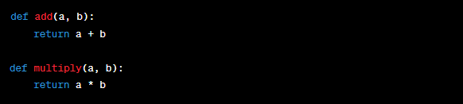

◉ Modularização
A modularização em Python refere-se à prática de dividir um programa em módulos separados,
onde cada módulo contém um conjunto de funções, classes e variáveis relacionadas. Isso ajuda
a organizar e gerenciar melhor o código, tornando-o mais legível, reutilizável e manutenível.
A modularização é fundamental para projetos maiores, pois evita a criação de um único arquivo
de código gigante e desorganizado.
Aqui estão os passos básicos para modularizar um programa em Python:
Divisão Lógica: Analise o seu código e identifique partes que podem
ser agrupadas de acordo com sua função e responsabilidade. Cada grupo pode se tornar um módulo separado.
Crie Arquivos de Módulo: Crie um arquivo .py separado para cada módulo que você deseja criar.
Nomeie esses arquivos de acordo com o conteúdo que eles vão conter.
Defina Funções e Classes: Dentro de cada arquivo de módulo, defina funções, classes e variáveis
relacionadas à funcionalidade desse módulo específico.
Importação: No arquivo principal ou em outros módulos, você pode importar as funções, classes e
variáveis dos módulos que criou usando a declaração import nome_do_modulo.
Utilização: Depois de importar o módulo, você pode usar as funções e classes definidas nele como
se fossem locais ao seu próprio código.
Main Module: Geralmente, você deve ter um arquivo principal (por exemplo, main.py) onde inicia
a execução do programa. Isso permite que você organize e controle o fluxo principal do programa.
Aqui está um exemplo simplificado de modularização em Python:
Suponha que você esteja criando um programa para realizar operações matemáticas simples,
como adição e multiplicação. Você pode modularizar o código da seguinte maneira:
math_operations.py (Módulo de operações matemáticas):

main.py (Arquivo principal):

Nesse exemplo, você criou um módulo chamado math_operations para conter as funções de adição e multiplicação.
No arquivo principal main.py, você importou essas funções e as utilizou para realizar operações matemáticas.